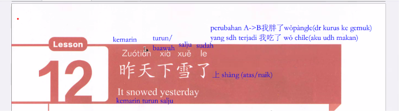
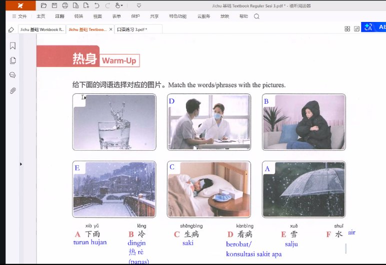
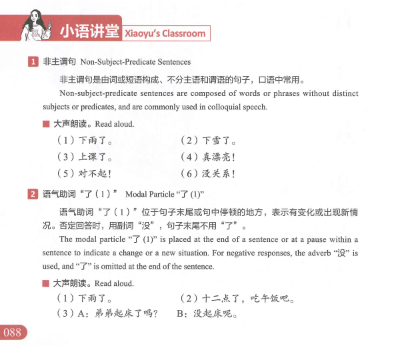
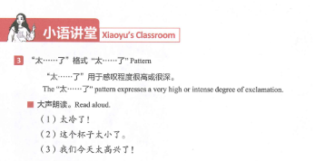
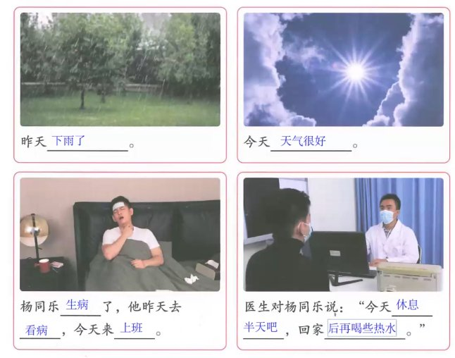

Latihan percakapan · 对话练习

Arti: "Kemarin turun salju / It snowed yesterday."
Kosakata 昨天 (zuótiān) berarti kemarin, kata 下 (xià) berarti turun / bawah (kebalikan dari 上 shàng = atas/naik), kata 雪 (xuě) adalah salju, dan 了 (le) adalah partikel penanda perubahan kondisi atau peristiwa yang telah terjadi.

Jawaban yang tepat: A. 下雨 (xià yǔ = turun hujan)
Penjelasan: Menampilkan butiran air hujan yang turun membasahi payung transparan.
Jawaban yang tepat: B. 冷 (lěng = dingin)
Penjelasan: Seseorang mengenakan jaket tebal dan bersedekap menahan hawa dingin.
Jawaban yang tepat: C. 生病 (shēng bìng = sakit)
Penjelasan: Pasien yang sedang berbaring lemas dengan kantung es/kompres penurun demam di sampingnya.
Jawaban yang tepat: D. 看病 (kàn bìng = berobat / berkonsultasi ke dokter)
Penjelasan: Pasien yang duduk di ruang praktik sedang berkonsultasi mengenai keluhan kesehatannya kepada dokter berpakaian medis putih.
Jawaban yang tepat: E. 雪 (xuě = salju)
Penjelasan: Lanskap jembatan kayu dan rumah yang terselimuti butiran salju putih tebal (昨天下雪了).
Jawaban yang tepat: F. 水 (shuǐ = air)
Penjelasan: Segelas air minum bersih dengan percikan segar yang disarankan banyak diminum saat cuaca dingin atau kurang sehat (多喝水).


Latihan komprehensif menguji penguasaan kosakata baru (生词) dan tata bahasa penting Bab 12: penggunaan partikel perubahan 了, pola eksklamasif 太……了, serta mendeskripsikan peristiwa cuaca dan kondisi sehari-hari sesuai gambar.
